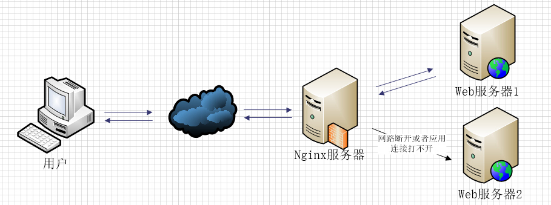

Preface
Nginx's proxy and load balancing functions are the most commonly used. The basic syntax and configuration of nginx have already been described inDetailed Nginx Configuration. This article cuts straight to the point: first describing proxy-related configurations, then explaining load balancing in detail.
Nginx Proxy Service Configuration Notes
1. Set the 404 page redirect address
error_page 404 https://www.runnob.com; #错误页 proxy_intercept_errors on; #如果被代理服务器返回的状态码为400或者大于400，设置的error_page配置起作用。默认为off。
2. If our proxy only allows one of the GET or POST request methods
proxy_method get; #支持客户端的请求方法。post/get；
3. Set the supported HTTP protocol version
proxy_http_version 1.0 ; #Nginx服务器提供代理服务的http协议版本1.0，1.1，默认设置为1.0版本
4. If your nginx server acts as a proxy for two web servers using the round-robin load balancing algorithm, then when IIS on one of your machines is shut down, meaning the web service is inaccessible, the nginx server will still distribute requests to this inaccessible web server. If the response connection time is too long, the client's page will keep waiting for a response, greatly degrading the user experience. How can we avoid this situation? Here I've included a diagram to illustrate the problem.

If web2 in the load balancing setup encounters such a situation, nginx will first request web1, but with improper configuration, nginx will continue to distribute requests to web2 and wait for web2's response until the response times out, then redistribute the request to web1. If the response time is too long, the user will wait even longer.
The following configuration is one of the solutions.
proxy_connect_timeout 1; #nginx服务器与被代理的服务器建立连接的超时时间，默认60秒 proxy_read_timeout 1; #nginx服务器想被代理服务器组发出read请求后，等待响应的超时间，默认为60秒。 proxy_send_timeout 1; #nginx服务器想被代理服务器组发出write请求后，等待响应的超时间，默认为60秒。 proxy_ignore_client_abort on; #客户端断网时，nginx服务器是否终端对被代理服务器的请求。默认为off。
5. If you use the upstream directive to configure a group of servers as proxied servers, the access algorithm among the servers follows the configured load balancing rules. Additionally, this directive can be used to configure under which abnormal conditions requests should be handed over to the next group of servers in turn.
proxy_next_upstream timeout; #反向代理upstream中设置的服务器组，出现故障时，被代理服务器返回的状态值。
Status values can be: error|timeout|invalid_header|http_500|http_502|http_503|http_504|http_404|off
- error: A server error occurs when establishing a connection, sending a request to the proxied server, or reading response information.
- timeout: A timeout occurs when establishing a connection, sending a request to the proxied server, or reading response information.
- invalid_header: The response header returned by the proxied server is abnormal.
- off: Unable to distribute requests to the proxied server.
- http_400, ...: The status codes returned by the proxied server are 400, 500, 502, etc.
6. If you want to obtain the client's real IP over HTTP instead of the proxy server's IP address, you need to make the following settings.
proxy_set_header Host $host; #只要用户在浏览器中访问的域名绑定了 VIP VIP 下面有RS；则就用$host ；host是访问URL中的域名和端口 www.taobao.com:80
proxy_set_header X-Real-IP $remote_addr; #把源IP 【$remote_addr,建立HTTP连接header里面的信息】赋值给X-Real-IP;这样在代码中 $X-Real-IP来获取 源IP
proxy_set_header X-Forwarded-For $proxy_add_x_forwarded_for;#在nginx 作为代理服务器时，设置的IP列表，会把经过的机器ip，代理机器ip都记录下来，用 【，】隔开；代码中用 echo $x-forwarded-for |awk -F, '{print $1}' 来作为源IP
For related articles about X-Forwarded-For and X-Real-IP, you can refer to:X-Forwarded-For in HTTP Request Headers 。
7. Below is part of my configuration file for proxy setup, for reference only.
include mime.types; #文件扩展名与文件类型映射表 default_type application/octet-stream; #默认文件类型，默认为text/plain #access_log off; #取消服务日志 log_format myFormat ' $remote_addr–$remote_user [$time_local] $request $status $body_bytes_sent $http_referer $http_user_agent $http_x_forwarded_for'; #自定义格式 access_log log/access.log myFormat; #combined为日志格式的默认值 sendfile on; #允许sendfile方式传输文件，默认为off，可以在http块，server块，location块。 sendfile_max_chunk 100k; #每个进程每次调用传输数量不能大于设定的值，默认为0，即不设上限。 keepalive_timeout 65; #连接超时时间，默认为75s，可以在http，server，location块。 proxy_connect_timeout 1; #nginx服务器与被代理的服务器建立连接的超时时间，默认60秒 proxy_read_timeout 1; #nginx服务器想被代理服务器组发出read请求后，等待响应的超时间，默认为60秒。 proxy_send_timeout 1; #nginx服务器想被代理服务器组发出write请求后，等待响应的超时间，默认为60秒。 proxy_http_version 1.0 ; #Nginx服务器提供代理服务的http协议版本1.0，1.1，默认设置为1.0版本。 #proxy_method get; #支持客户端的请求方法。post/get； proxy_ignore_client_abort on; #客户端断网时，nginx服务器是否终端对被代理服务器的请求。默认为off。 proxy_ignore_headers "Expires" "Set-Cookie"; #Nginx服务器不处理设置的http相应投中的头域，这里空格隔开可以设置多个。 proxy_intercept_errors on; #如果被代理服务器返回的状态码为400或者大于400，设置的error_page配置起作用。默认为off。 proxy_headers_hash_max_size 1024; #存放http报文头的哈希表容量上限，默认为512个字符。 proxy_headers_hash_bucket_size 128; #nginx服务器申请存放http报文头的哈希表容量大小。默认为64个字符。 proxy_next_upstream timeout; #反向代理upstream中设置的服务器组，出现故障时，被代理服务器返回的状态值。error|timeout|invalid_header|http_500|http_502|http_503|http_504|http_404|off #proxy_ssl_session_reuse on; 默认为on，如果我们在错误日志中发现“SSL3_GET_FINSHED:digest check failed”的情况时，可以将该指令设置为off。
Nginx Load Balancing Explained
In the articleDetailed Nginx Configuration, I mentioned the load balancing algorithms available in nginx. In this section, I will give a detailed explanation on how to configure them.
First, let me explain the upstream directive. This directive is used to define a group of proxied server addresses and then configure the load balancing algorithm. The proxied server addresses can be written in two ways.
upstream mysvr {
server 192.168.10.121:3333;
server 192.168.10.122:3333;
}
server {
....
location ~*^.+$ {
proxy_pass http://mysvr; #请求转向mysvr 定义的服务器列表
}
}
Then, let's get to some practical stuff.
1. Hot standby: If you have 2 servers, the second server is activated only when the first server encounters a failure. The order in which the servers handle requests: AAAAAA, then suddenly A goes down, BBBBBBBBBBBBBB.....
upstream mysvr {
server 127.0.0.1:7878;
server 192.168.10.121:3333 backup; #热备
}
2. Round robin: nginx defaults to round-robin with a default weight of 1 for all servers. The order in which the servers handle requests: ABABABABAB....
upstream mysvr {
server 127.0.0.1:7878;
server 192.168.10.121:3333;
}
3. Weighted round robin: Requests are distributed to different servers in different quantities according to the configured weight. If not set, the default weight is 1. The request order for the servers below is: ABBABBABBABBABB....
upstream mysvr {
server 127.0.0.1:7878 weight=1;
server 192.168.10.121:3333 weight=2;
}
4. ip_hash: nginx routes requests from the same client IP to the same server.
upstream mysvr {
server 127.0.0.1:7878;
server 192.168.10.121:3333;
ip_hash;
}
5. If you don't quite understand the above 4 balancing algorithms, you can refer toDetailed Nginx Configuration, which may make it easier to understand.
At this point, you might feel that nginx's load balancing configuration is particularly simple and powerful. But we're not done yet. Let's continue, and here I'll digress a bit.
Explanation of several status parameters in nginx load balancing configuration.
-
down: Indicates that the current server temporarily does not participate in load balancing.
-
backup: Reserved backup machine. It will only be requested when all other non-backup machines fail or are busy, so this machine has the lightest load.
-
max_fails: The number of allowed request failures, default is 1. When the maximum number is exceeded, the error defined by the proxy_next_upstream module is returned.
-
fail_timeout: The time to pause the service after experiencing max_fails failures. max_fails can be used together with fail_timeout.
upstream mysvr {
server 127.0.0.1:7878 weight=2 max_fails=2 fail_timeout=2;
server 192.168.10.121:3333 weight=1 max_fails=2 fail_timeout=1;
}
At this point, it's safe to say that nginx's built-in load balancing algorithms are all covered. If you want to understand nginx's load balancing algorithms more deeply, nginx officially provides some plugins that you can explore.
Original article URL: https://www.cnblogs.com/knowledgesea/p/5199046.html
Click me to share notes
<p style="font-size:14px;">The note should be an extension of the content of this article!</p><br> <p style="font-size:12px;"><a href="../tougao.html" target="_blank">To submit an article, click here</a></p> <p style="font-size:14px;"><a href="./runoob-user-test-intro.html" target="_blank">How to get a registration invitation code</a></p> <h3 class="text-muted"><i class="fa fa-info-circle" aria-hidden="true"></i> You must <a href=".." class="runoob-pop">log in</a> before sharing notes!</h3> <p><a href="./runoob-user-test-intro.html" target="_blank">How to get a registration invitation code</a></p>